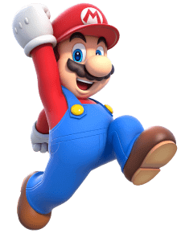

PLAYER 001
HÉROE / PROTAGONISTA

MUSHROOM KINGDOM · 001PERSONAJE SELECCIONADO
Mario
El héroe del Reino Champiñón. Su ingenio, valentía y salto inconfundible lo llevaron desde los arcades hasta aventuras por galaxias enteras.
PRIMERA APARICIÓN
Donkey Kong Arcade · 1981 · Su primera aparición como Jumpman.
VÍNCULOS
Luigi · Princesa Peach · Toad · Yoshi